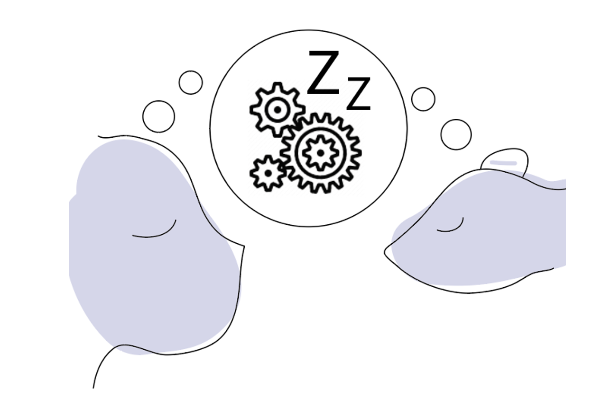
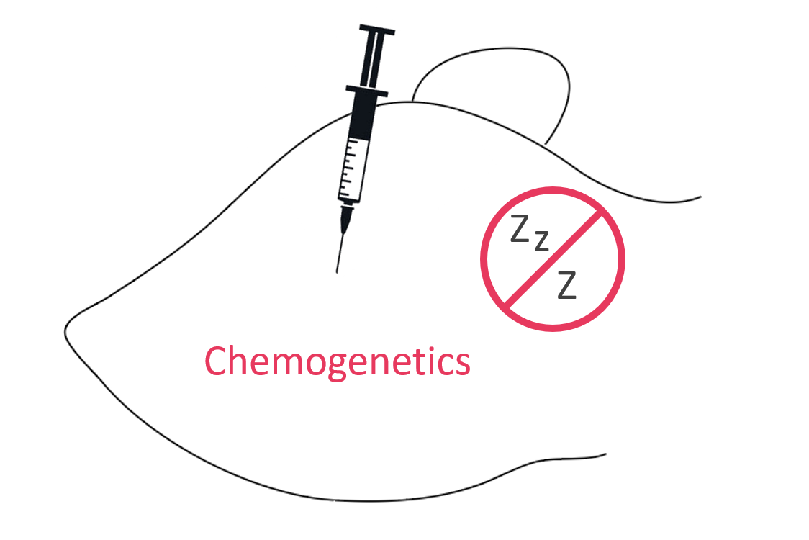
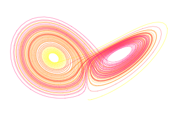
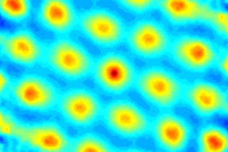
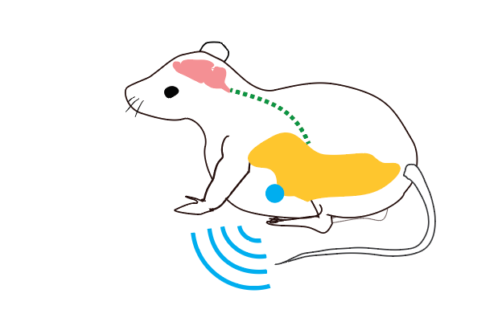
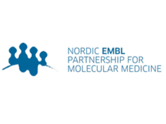
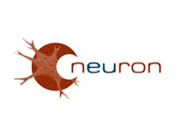

Sleep & Cognitive Development
Decoding immature neural activity from multiple brain areas in freely behaving rodent pups to reveal mechanisms at play during developmental sleep.
Norwegian Centre for Molecular Biosciences and Medicine, Oslo, Norway
We are hiring! Please check our hiring page!
We combine high density electrophysiology, optogenetics and computational analyses to investigate how sleep contributes to healthy cognitive development.
The lab is focused on the following research lines:

Decoding immature neural activity from multiple brain areas in freely behaving rodent pups to reveal mechanisms at play during developmental sleep.

Exploiting recent advance in gene editing, molecular and viral tools to engineer rodent models of developmental sleep deprivation (Chemogenetic, Optogenetic, CRISPR)

Engineering wireless and fully implantable electrophysiological “brain machine interface” to decode and manipulate brain activity in real time in freely-behaving rodents.

Developing analytical pipelines and machine learning algorithms to automatically detect and decode multiunit activity codes and oscillatory events across brain regions.

Revealing sleep and wake neural computations that support learning, updating and consolidation of memory traces, as well as the neural code underlying spatial cognition.

Monitoring the communications between the brain and the adipose tissue during adolescent sleep to better understand how bad sleep habits may lead to the emergence of metabolic disorders

Developing tools and strategies to study autophagy during sleep in an invertebrate (Drosophila) and a rodent (rat) model of sleep deprivation.

Combining targeted sleep disruption with 3D spatial transcriptomics and high-resolution imaging to understand how sleep impacts the maturation of interneurons and glia across postnatal development.

Investigating the impact of childhood adversities on adulthood psychopathology in rodent model using in vivo electrophysiology and behavioral assays.
Stay updated with the latest information on funding, research, lab outings, seminars and recruitments in the lab.

March is Sleep Awareness Month and our group is marking the event across NCMBM social media channels!

Congratulations to Solveig on her incredible Master's thesis defense at the University of Oslo!

Congrats to Cantin for being awarded a new Nansenfondet Research Grant!

Welcome to Dongkyun, our new postdoctoral researcher!

Paulina went to visit the Fly Sleep Lab of Sha Liu at VIB, KU Leuven for 3 weeks

Congratulations to Alessandro on his MSCA Fellowship success!

We are excited to share a recent portrait interview with our group leader, Charlotte Boccara, published in Apollon!

Congratulations to Henriette on her Master's thesis defense at NMBU!

Welcome to our new Master's student Teije Bonsema joining the lab for her thesis projects.

Welcome to Sophia Wilhelm, our new postdoctoral researcher!

Letizia and Cantin represented the lab as instructors during Oslo Bioinformatics Workshop Week 2025
We hosted a one week PhD course on Molecular Medicine at NCMBM with 1 day devoted to neuroscience.

Paulina has been awarded new funding to investigate sleep‑induced autophagy as a protective mechanism for cancer prevention.

Welcome to our new Master's student Anna Maria Begkai joining the lab for her thesis projects.

We were delighted to host Adrien Peyrache for this week's NCMBM International Tuesday Seminar.

We have received funding for a NordForsk-funded NORPOD program of the Nordic EMBL Partnership!

This week, the lab was pleased to welcome Francesca Pozzolo, a PhD student from the Sainsbury Wellcome Centre at UCL.

Welcome to Anastasia Tsopanidou, a visiting PhD student from the University of Copenhagen.

Welcome to our new Master's students Malin, Karolina and Emil, joining the lab for their thesis projects.

Congrats to Olga Rogulina for winning the Best Academic Poster Award for the summer research projects from UiO:Life Science!
The lab is generously supported by research grants and fellowships from the following sources